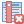
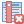

3 Атрибутивная информация
С каждым объектом связан набор атрибутов, которые характеризуют тот или иной объект. Так, слой “Дороги” содержит атрибуты id и name, а слой выделов: id и videl. Атрибуты объектов отдельного слоя представлены в виде таблицы, где каждая строка - отдельный объект, а каждый столбец (который называется полем или атрибутом) - та или иная характирстика. Таким образом объекты, кроме положения в пространстве и формы, могут иметь количественные и качественные характеристики (например тип покрытия дороги или средний возраст насаждения в выделе). Таблица атрибутов открывается нажатием правой кнопки мыши в панеле слоев > “Открыть таблицу атрибутов”  (Видео 3.1).
(Видео 3.1).
Откройте таблицу атрибутов слоя “Выделы”.
При выделении строки в таблице атрибутов, связанная с ним геометрия будет подсвечена желтым цветом на карте, и наоборот (см. Глава 2.5). Инструменты таблицы атрибутов по большей части дублируют инструменты основного окна программы (Рисунок 3.1). В режиме редактирования доступно большее количество инструментов а так же появляется дополнительная строка для массового редактирования атрибутов (Рисунок 3.1 (b)).


Они позволяют переключить слой в “Режим редактирования”  , сохранить изменения
, сохранить изменения  , удалить выбранные объекты , инструменты выделения объектов, инструменты по добавлению и удалению полей (“Новое поле” и “Удалить поле” ), инструмент “Реаргонизовать колонки”
, удалить выбранные объекты , инструменты выделения объектов, инструменты по добавлению и удалению полей (“Новое поле” и “Удалить поле” ), инструмент “Реаргонизовать колонки”  для измнения порядка полей в таблице и другие.
для измнения порядка полей в таблице и другие.
3.1 Создание и удаление полей
Создание новых полей возможно как при создании нового слоя, так и в дальнейшем в таблице атрибутов. Для однозначной индентификации каждого выдела в приделах участкового лесничества необходим не только номер выдела (это поле было добавлено при создании слоя “Выделы” и заполнено в процессе оцифровки) но и номер квартала. Для добавления нового поля переведите слой в Режим редактирования  и выберите инструмент Новое поле . Введите имя поля: “kvartal”; тип: “Целое число”, длина: 2 (в таком случае поле сможет содержать только двухзначные числа, максимальный номер квартала 99) (Рисунок 3.2).
и выберите инструмент Новое поле . Введите имя поля: “kvartal”; тип: “Целое число”, длина: 2 (в таком случае поле сможет содержать только двухзначные числа, максимальный номер квартала 99) (Рисунок 3.2).

Имена полей всегда вводятся на латинице без пробелов, для разделения слов можно использовать нижнее_подчеркивание. Использование других символов в имени поля может создать непредвиденные проблемы!
После нажатия ОК в таблице атрибутов появится новое пустое поле “kvartal”.
Для удаления полей используется инструмент “Удалить поле” (слой должен находиться в режиме редактирования). Воспользуемся этим инструментом что бы удалить поле id. В появившемся окне выберите удаляемое поле и нажмите ОК. Так же возможно выделить несколько полей сразу и удалить их.
В слой “Выделы” добавьте новое поле kvartal, как показано выше, и удалите поле id. Используйте инструмент Реорганизовать колонки  что бы поменять порядок полей (kvartal затем videl). После чего сохраните изменения в слое. В результате таблица атрибутов слоя должна соответствовать рисунку ниже (Рисунок 3.3).
что бы поменять порядок полей (kvartal затем videl). После чего сохраните изменения в слое. В результате таблица атрибутов слоя должна соответствовать рисунку ниже (Рисунок 3.3).

При добавлении нового поля важно обращать внимание не только на Имя поля, но и на Тип данных, который определяет какой тип информации может содержать поле. Для .shp файлов доступны следующие типы полей:
- Целое число (integer 32 или 64 бита), длина поля определяет сколько символов может вмещать поле;
- Десятичное число (real), длина определяет общее число символов (включая дробную часть), точность - количество знаков после запятой;
- Текст (string) позволяет хранить надписи, количество символов так же определяется параметром длина.
При создании нового поля важно задать правильный тип поля и длину (количество символов), изменить эти параметры в последствии будет не просто. Соответственно, если поле будет содержать порядковые номера объектов, следует выбрать тип Целое число (integer 32 или 64 бита), если в поле будет записана длина или площадь - Десятичное число (real) с необходимой настройкой длины и точности, в случае названий объектов следует использовать тип Текст (string) необходимой длины.
3.2 Ввод атрибутивной информации
Существует несколько способов добавления атрибутивной информации. Так, возможно заполнить таблицу атрибутов вручную, как в любом табличном редакторе, или прикрепить уже существующую таблицу по ключевому полю. Так же возможно рассчитать новые атрибуты из уже имеющихся или из свойств геометрий объектов (например длина, площадь, периметр и т.д.). Для ввода информации вручную достаточно открыть таблицу атрибутов слоя, перевести слой в режим редактирования и заполнить нужные колонки как это делается в любом табличном редакторе.
Заполните вручную поле “kvartal” у первых пяти выделов. Номер кваратала для остальных выделов будет заполнен другим способом.
Поскольку все значения поля kvartal будут одинаковыми, есть способ заполнить все значения сразу, используя Редактор выражений панель инструментов которого появляется при активации режима редактирования. Редактор выражений имеет расширенный режим, для перехода в который необходимо нажать на иконку  . Этот режим позволяет создавать сложные выражения, рассчитывать длины и площади объектов и многое другое. Мы более подробно познакомимся с этим режимом в последующих разделах. Для начала заполним поле “kvartal”. Для этого в редакторе выражений слева от равно выбирается поле, к которму будет применяться выражение, справа - выражение. Применить выражение можно ко всем объектам слоя (пункт “Обновить все”) или только к выделенным в данный момент (пункт “Обновить выделенные”). Слева укажите обновляемое поле (“kvartal”), справа - номер квартала, и веберите пункт “Обновить все”. После того, как поле будет заполнено номером квартала сохарните изменения (иконка
. Этот режим позволяет создавать сложные выражения, рассчитывать длины и площади объектов и многое другое. Мы более подробно познакомимся с этим режимом в последующих разделах. Для начала заполним поле “kvartal”. Для этого в редакторе выражений слева от равно выбирается поле, к которму будет применяться выражение, справа - выражение. Применить выражение можно ко всем объектам слоя (пункт “Обновить все”) или только к выделенным в данный момент (пункт “Обновить выделенные”). Слева укажите обновляемое поле (“kvartal”), справа - номер квартала, и веберите пункт “Обновить все”. После того, как поле будет заполнено номером квартала сохарните изменения (иконка  ). Аналогичным способом возможно изменить атрибуты только у выделенных объектов (пункт “Обновить выделенные”, см. Глава 2.5).
). Аналогичным способом возможно изменить атрибуты только у выделенных объектов (пункт “Обновить выделенные”, см. Глава 2.5).
По примеру выше заполните поле “kvartal” для всех выделов.
Для заполнения полей возможно использовать функции. Например, функция $area вычисляет площадь для каждого объекта. Используя эту функцию в редакторе выражений вы получите площадь для каждого выдела (Видео 3.3).
- В слое “Выделы” создайте новое поле: имя - “area_videl”; тип - десятичное число (real); длина - 10; точность - 2
- Рассчитайте площадь для каждого выдела. Используйте редактрор выражений что бы заполнить поле “area_videl” функцией
$area(Видео 3.3).
Единицы измерения площади функцией @area определяются настройками проекта. Для их изменения вы можете перейти во вкладку “Проект” > “Свойства…” > вкладка “Общие” в разделе “Измерения” настраиваются “Единицы измерения расстояния” и “Единицы измерения площади”. Изменение единиц измерения не приводит к их автоматическому пересчету в таблице атрибутов. Для этого повторно заполните поле функцией @area.
3.3 Объединение таблиц по ключевому полю
В случае когда существуют отдельно слой геометрий объектов и атрибутивные описания (в виде “плоской” таблицы), рационально провести операцию объединения таблиц так, что бы к каждому объекту была присоединена соответствующая строка атрибутивной характеристики. Основное условие для проведения такой операции - наличие в обеих таблицах уникального ключевого поля (key) которое бы однозначно характеризовало каждый объект в одной и другой таблице. Далее в этом разделе будут использоваться данные 477 выделов Караульного участкового лесничества (файл “Выделы.shp”) с двумя атрибутами: номер кваратала (kvartal) и номер выдела (videl). Таксационная характеристика содержится в отдельной таблице “Таксационные описания.xlsx”, которая имеет одинаковые поля с векторным слоем (kvartal и videl) а так же таксационную характеристику для каждого выдела.
Создайте новый проект со слоем “Выделы.shp”, для этого:
- Загрузите файлы “Выделы.shp” и “Таксационные описания.xlsx” на компьютер.
- Создайте новую папку проекта под названием “Раздел 3”.
- Создайте новый проект и загрузите туда слой “Выделы.shp” (система координат проекта EPSG: 32646).
- Сохраните файл проекта в папку проекта.
3.3.1 Импорт таблицы
Программа QGIS позвояет загружать не только векторные и растровые данные (shp-файлы, GeoPackage, tif. и др.) но таблицы, создаваемые в любом табличном редакторе (Excal, Libreoffice Calc и др.). Один из способов загрузки таких таблиц - сохранение в формат .csv (Comma-Separated Values) и последующий экспорт в QGIS (см. Приложение C). В этом подразделе рассмотрен более простой способ - загрузка .xlsx файла напрямую в QGIS. Для этого перетяните файл Таксационные описания.xlsx в окно программы, после чего таблица появится в панеле слоев. Если в файле несколько листов, появится панель с выбором. Изменения, произведенные в QGIS, будут сохранены в файл и наоборот (Видео 3.4).
Загрузите таблицу “Таксационные описания.xlsx” в QGIS.
3.3.2 Создание ключевого поля
Уникальный индентификатор любого выдела состоит из названия лесничества, названия участкового лесничества, номера квартала и, собственно номера выдела. Такой ключ будет уникален для любого выдела. В нашем случае используются выдела на территории одного участкового лесничества, поэтому первые две составляющие ключа (лесничество и участковое лесничество) можно пропустить. Таким образом, ключ для связи между таблицами будет состоять из двух составляющих, разделенных нижним_подчеркиванием: номер квартала_номер выдела (например, для квартала 27 выдела 1 запись в поле “key” будет иметь следующий вид 27_1). Такое поле с ключем (key) необходимо создать как в атрибутивной таблице векторного слоя, так и в таблице таксационных описаний.
Для создания ключевого поля, перейдите в таблицу атрибутов слоя “Выделы” и создайте новое поле (Имя: key, Тип: Текст, Длина: 5) Рисунок 3.4.

В панеле редактора выражений, слева от равно, выберите поле key и перейдите в расширенный режим редактора выражений  . В появившемся окне в левой части записывается выражение, в средней части - список доступных функций, в правой части - справка по этим функциям. В левой части окна запишите выражение, которое объединяет поля “kvartal” и “videl” с разделителем в виде нижнего подчеркивания:
. В появившемся окне в левой части записывается выражение, в средней части - список доступных функций, в правой части - справка по этим функциям. В левой части окна запишите выражение, которое объединяет поля “kvartal” и “videl” с разделителем в виде нижнего подчеркивания: "kvartal" || '_' || "videl". Во вкладке Поля и значения в центральной части редактора выражений, представлены все поля таблицы атрибутов. При двойном клике на поле, оно появится в панеле слева (Видео 3.5).
Результат выражения отображается в левом нижнем углу окна (Просмотр:). Если выражение составлено не корректно, вместо результата выражения будет отображаться надпись “Ошибочное выражение”. В этом случае следует найти и устранить ошибку. После написания выражения, нажмите ОК а затем Обновить все. Перед обновлением поля убедитесь что слева от равно указано поле key иначе есть риск перезаписать данные другого поля. В результате поле key должно быть заполнено сочетаниями квартал_выдел для каждого выдела Рисунок 3.5.

Сохраните изменения в слое “Выделы” и создайте поле key в таблице с “Таксационные описания” аналогичным образом.
Создайте и заполните поле key в слоях “Выделы” и “Таксационные описания”.

3.3.3 Объединение таблиц
После того как поле “key” создано в двух таблицах, его можно использовать для связи строк таблиц между собой. Для этого перейдите в пункт контекстного меню слоя “Выделы” “Свойства…” > “Связи” > “Добавить новую связь”  . В пункте “Связанный слой” выберите таблицу “Таксационные описания”, “Связываемое поле” - “key”, “Целевое поле” - “key”, “Пользовательский префикс имени поля” - “tax_”. После нажатия “ОК” > “Применить” в атрибутивной таблие слоя “Выделы” появится присоединенная таксационная характеристика (Видео 3.6). В настройках связи так же можно выбрать присоединяемые поля (столбцы таблицы, которые будут присоединены к векторному слою) или задать пользовательский префикс имени поля (общее название, которое будет добвалено перед именами присоединяемых столбцов).
. В пункте “Связанный слой” выберите таблицу “Таксационные описания”, “Связываемое поле” - “key”, “Целевое поле” - “key”, “Пользовательский префикс имени поля” - “tax_”. После нажатия “ОК” > “Применить” в атрибутивной таблие слоя “Выделы” появится присоединенная таксационная характеристика (Видео 3.6). В настройках связи так же можно выбрать присоединяемые поля (столбцы таблицы, которые будут присоединены к векторному слою) или задать пользовательский префикс имени поля (общее название, которое будет добвалено перед именами присоединяемых столбцов).
По примеру выше, присоедините к векторному слою “Выделы” таблицу “Таксационные описания” (Видео 3.6). Результат объединения представлен на рисунке ниже (Рисунок 3.7).

Слой с присоединенной атрибутивной информацией можно сохранить как новый векторный слой и использовать в дальнейшей работе. Для этого в панеле слоев перейдите в контекстное меню слоя “Выделы” > Экспорт > Сохранить объекты как…. В новом окне выберите формат Shape-файл ESRI. Для выбора папки сохранения файла в поле “Имя файла” нажмите … и укажите папку проекта. После чего нажмите ОК, новый слой появится в панеле слоев.
Сохраните в папку проекта векторный слой “Выделы” с прикрепленной атрибутивной информацией под названием “Выделы с таксационными описаниями”.